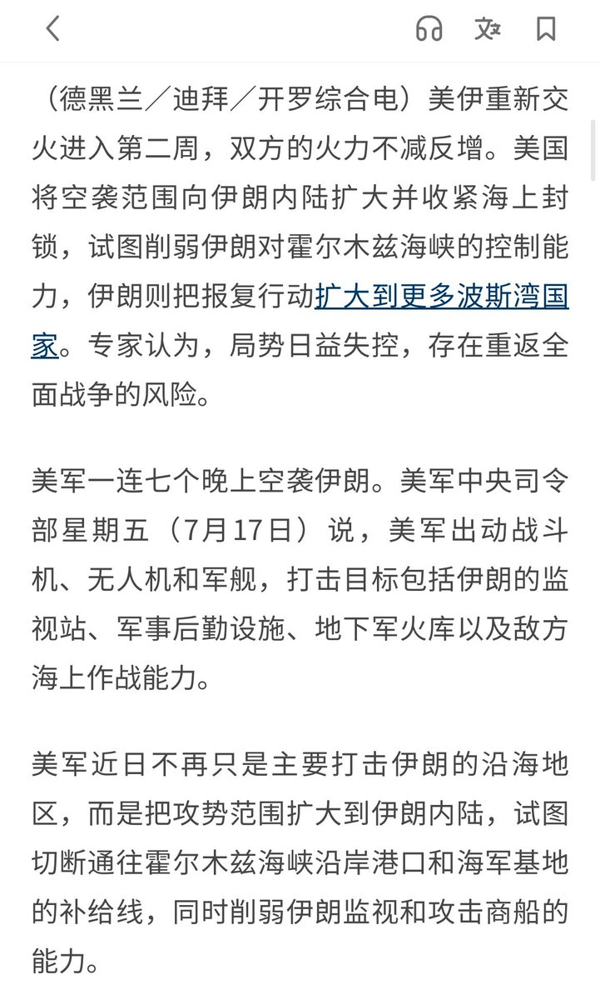

𝐀𝐬𝐡𝐥𝐞𝐲 𝐁𝐥𝐨𝐜𝐤🍥🌹🇪🇸🏳️⚧️🇪🇺
@bolckAshley
這話說得，反俄又不是為了挺美
我只是單純的對這個充滿著大國沙文主義，極端民族主義，文化保守主義的偽裝成國家的民族監獄感到無比的厭惡罷了😁
而且不管親俄的建制派怎麼叫喚，都改變不了從長遠來看俄羅斯將會不斷衰弱的事實，而烏克蘭在這次戰爭中鞏固了烏克蘭的民族國家👋

赛高の葱娘酱miku🇨🇳☭☪︎——马列毛犁庭扫穴封资白右 大一统降维打击姨殖山竹
@CPUP2024
我希望任何拿俄乌战争的长期失血去庆幸俄罗斯药丸的殖人记住一件事，美伊战争至今没有终结。
你们欢呼雀跃的俄罗斯式的损失，正在百倍的遭遇在美国人身上，但你们没有一个人愿意在“自由”中站出来，说出这件事。 https://t.co/nz9dLCtrN3